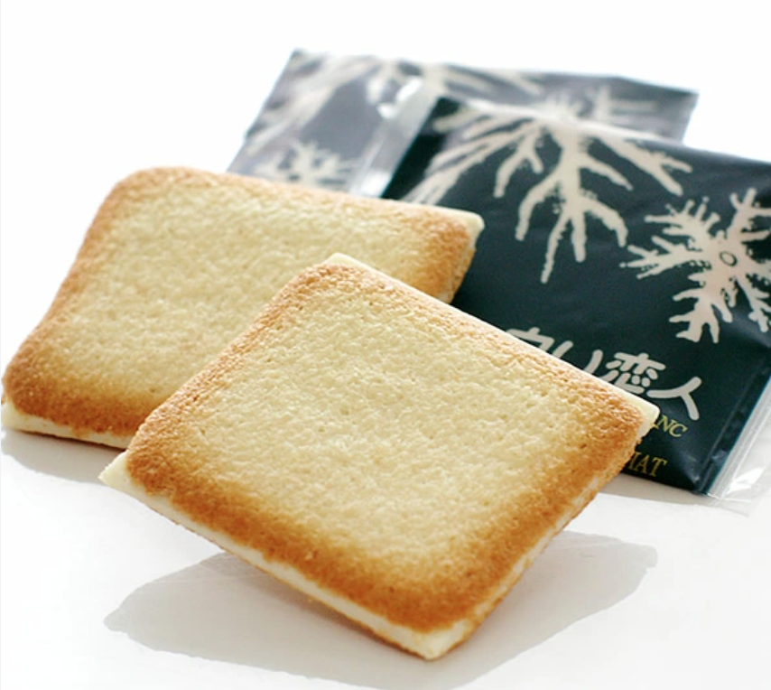
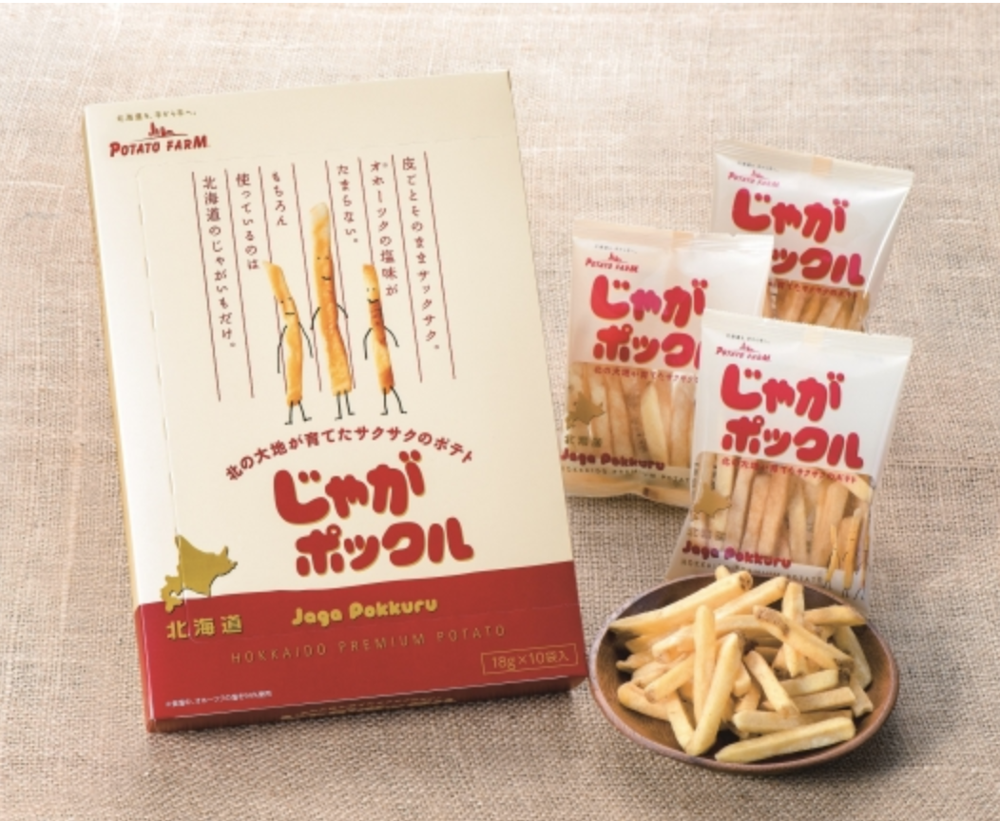
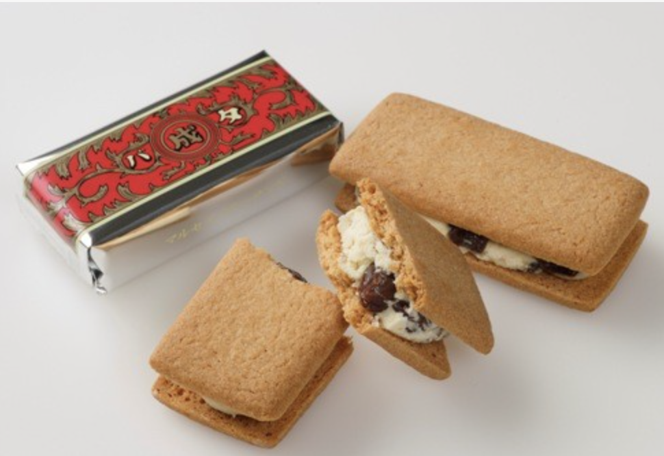
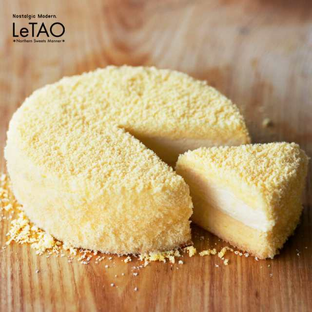

お土産
-

-
- 白い恋人
- 白い恋人は、北海道札幌市の菓子メーカー、石屋製菓が製造・販売しているラング・ド・シャである。パッケージの中央に描かれている山は、利尻島の利尻山である。現在では、年間２億枚を売り上げるほどの大人気菓子となっている。
-

-
- じゃがポックル
- じゃがポックルは、カルビーが「ポテトファーム」のブランド名で製造している、じゃがいもを主材料とするスナック菓子である。生のじゃがいもをスティック状にしてそのままフライしている。名前の由来は、アイヌ語で「ふきの下の人」を意味するコロポックルからとったとされている。この商品は、もともとじゃがりこに対抗する目的で作られた。
-

-
- マルセイバターサンド
-
マルセイバターサンドは、北海道帯広市の六花亭が販売している菓子。同社の販売額のおよそ4割を占める代表的な菓子であり、北海道土産としての知名度が高い。六花亭専用の北米産小麦粉でつくったビスケットで、ホワイトチョコレートと北海道産生乳100パーセントのバターおよびカリフォルニア州産のレーズンをあわせたクリームをサンドしている。
-

-
- ルタオ
- チーズケーキの「ドゥーブルフロマージュ」は店頭のみで販売している生ケーキであったが、2005年頃にテレビ番組『松紳』で取り上げられたことなどによって一気に注目を集めた。ところが「ケーキを自宅に送ってほしい」という要望に対して、当時はケーキを冷凍すると解凍後に味が落ちてしまうのが一般的な認識であった。そのため、原料や製法を見直しながら冷凍技術を開発し、3年の歳月を経て冷凍状態での発送が実現した。